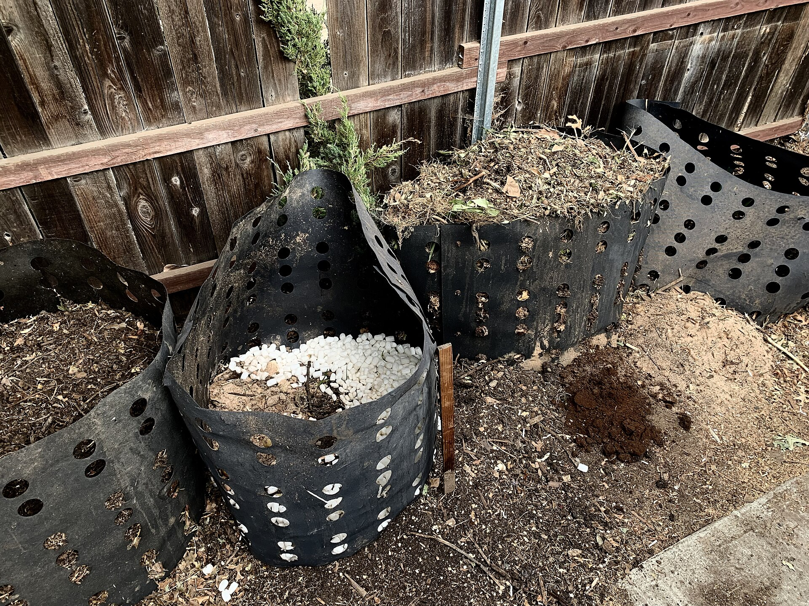

Practical guide · Fix-it
What’s wrong with my compost?
Five problems account for almost every bad compost pile: a smell, a pile that won’t heat, moisture in the wrong direction, uninvited animals, and a finished pile that stalls. Each one has a short diagnosis and a short fix — and the fix usually names a tool.
1. The smell problem
A healthy hot pile smells like a forest floor — earthy, sometimes faintly sweet. Two smells mean something is off, and they point at opposite mistakes.
Ammonia — sharp, cat-urine sharp. Too much nitrogen, not enough structure. Grass clippings and food scraps mat together, the pile goes dense, and excess nitrogen leaves as ammonia gas. The fix: add dry, carbon-rich browns — leaves, shredded cardboard, straw — roughly twice the volume of the recent greens additions, then turn to mix. Hold the greens for a week while the pile re-balances.
Rotten eggs — sulfur, stagnant-pond sharp. Anaerobic. The pile has compacted into itself and air no longer reaches the core. The fix: turn it, and add bulky browns (small branches, choppy straw, even the inside of a tumbler’s half-finished batch) so air channels survive the season, not just the turn.
If the smell lives in your kitchen instead of your yard, the system is wrong, not your technique: kitchen scraps belong in a sealed system — a worm bin, a bokashi bucket, or a countertop composter — where the smell stays inside a lid.
2. The pile that won’t heat
Check four things, in order of how often each is the culprit:
- Volume. A hot pile needs roughly a cubic meter — about a meter on each side — to keep heat faster than it radiates. A half-meter bin of leaves will sit at ambient temperature forever, no matter how well you manage it.
- Ingredients (C:N). The working window is roughly 25–40 parts carbon to 1 part nitrogen. All leaves and shredded paper is a slow, cold pile; all grass and food scraps stinks (see problem 1). Mix until the pile looks half-and-half by volume.
- Moisture. 50–60% — a wrung-out sponge. Dry centers shut the machinery down (problem 3).
- Turning. During the active phase, every 3–5 days re-aerates the core. Turning more often than that cools the pile and extends the process — the same schedule that helps the heat also preserves it.
Then measure. A 20-inch compost thermometeraffiliate link is the instrument that tells you which of the four you just fixed: a climb means the pile is alive, a plateau means it wants turning, and an early drop below 110°F means stalled — full decision tree in the hot composting guide and the thermometer showdown.
A worm bin that never heats is not a broken pile — vermicomposting runs at 59–77°F by design. The worm-bin failure signs are different: sour smell, puddles, or worms trying to escape all mean overfeeding or poor drainage, covered in the vermicomposting guide.
3. Too wet and too dry
Moisture fails in both directions. Too dry, and microbes can’t move nutrients through the pile — decomposition crawls and the center stays bone-dry while the edges look fine. Too wet, and water fills the air pockets — the pile goes anaerobic and problem 1’s rotten-egg smell arrives.
The test: squeeze a handful from the pile’s core, not the surface. A drop or two of water is right. Nothing coming out is dry; a stream is wet.
- Too dry: water while turning, in stages, until the core reads like a wrung sponge across the whole cross-section. A straw cover or a simple lid moderates rain and sun so the reading doesn’t swing weekly.
- Too wet: mix in dry browns and turn. For bins, drainage is a design spec, not a habit — bottom doors, spigots, and air-flow floors are compared spec-for-spec in the compost bin roundup. Worm bins get the same rule from the top: drain the leachate before it puddles.
4. Rodents, flies, and other guests
Pests are an access problem and an invitation problem. Address both:
- Don’t invite: meat, dairy, and cooked food do not belong in an open pile. (Bokashi is the exception by design — those foods ferment in a sealed anaerobic bucket instead of rotting in a pile.)
- Bury every addition: cover each spoonful of fresh scraps under a layer of browns, the way you would cover soil with mulch. Exposed food is the fly line and the rat map.
- Deny entry: a tumbler with a locking lid is genuinely pest-resistant; static bins earn it only with sealed doors. For any ground bin, hardware cloth under the base stops burrowers — rats enter from below far more often than through the door.
- Move the kitchen indoors: worm bins live under sinks and in garages, where rats don’t shop; the worm bin roundup compares the sealed-drain designs that keep the bin odor-free indoors.
Flies swarming an open bin usually mean one thing: exposed fresh scraps. Cover them and the swarm leaves in a day or two.
5. Finished compost that stalls — and compost that isn’t finished
Hot compost matures in weeks; curing takes another one to three months. During curing it is normal — correct, even — for the pile to cool and slow. The thing to check is whether it is actually finished: visible recognizable material (eggshell, avocado pits, stalks) means it needs more time or a second pass, not more heat.
If curing stalls for many months, two causes dominate: material chopped too fine (compaction, no air) or too wet (the anaerobic smell again). Screen the coarse fraction back into the next active pile — it is the fastest head-start any pile can get.
If cold composting (no active phase), 3–12 months is the normal range. Patience is the method; occasional monthly turning just keeps it from going anaerobic.
The diagnostic sequence
When in doubt, ask four questions in order instead of fixing symptoms: What does it smell like? (nitrogen vs. anaerobic — problem 1). What does the thermometer read at the core? (alive, plateaued, stalled — problem 2). What does the squeeze test say? (dry vs. wet — problem 3). What went in, and how was it covered? (pests — problem 4). Four answers almost always land on one fix, and one fix usually ships in a box.
The gear each fix points to
- Turning and aeration: the tools hub and the turning-tool roundup
- Knowing the temperature: the thermometer showdown
- Pest-resistant outdoor systems: the compost bin roundup
- Kitchen scraps without smell or pests: worm bins, bokashi kits, countertop composters

Diagnose with a thermometer. Fix with the right tool.
Affiliate note: product links on this page may earn us a commission at no extra cost to you. Verdicts come from published specs and data, not commissions. Full disclosure